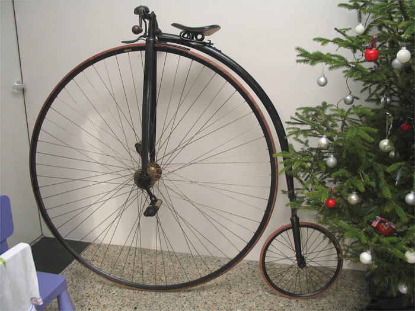

De Fluitende Fietser
Home
fietsen
verhuur
contact
openingstijden
over ons
de winkel is opgericht door 2 broers uit estland. de broers harry en barry hebben deze winkel opgericht in 1876. de eerste jaren waren moeilijk heel veel zat tegen, maar in 1891 werd de winkel heel erg populair. toen de broers waren overleden nam de zoon van harry en de dochter van barry de winkel over. en door hun werd de winkel nog veel populairder. door de jaren heen is de winkel verder verspreid over meer landen en is het bedrijf nog groter geworden. in 1965 ging de winkel ook specialiseren in het repareren van fietsen dat was een groot succes toen werd het bedrijf nog groter en veel bekender over de hele wereld. in 2002 werd de winkel genomineerd als beste fietsen winkel van de wereld, en in het jaar 2008 werd de winkel opnieuw genomineerd als beste winkel aller tijden.
